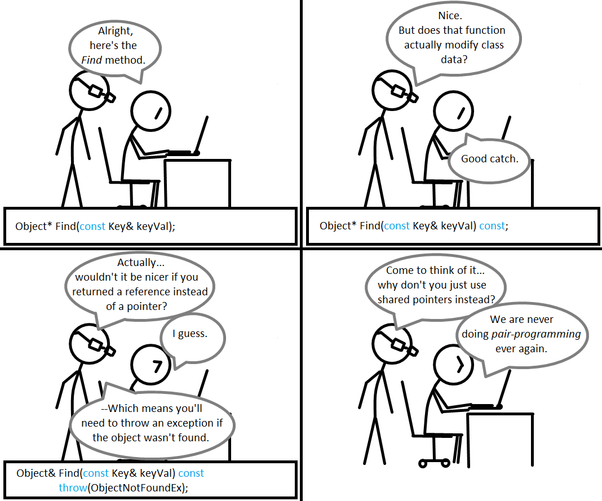

MEG MAKES
Drinking from the web development fire hose at Dev Bootcamp.
Pairing is caring.
August 17, 2014
One of the first things we were introduced to upon starting Phase 0 was the concept of pair programming. No, the DBC experience, thankfully, is not all about me sitting at my computer coding away and trying to solve problems on my own. The community is such a large part of the program and as part of that we will be spending a large percentage of our time programming with a partner.
How exactly does this work? There are a few different ways you can structure the relationship between the two people involved, but the model we will be using at DBC is the driver-navigator arrangement. The driver is the one typing the code while the navigator steers the overall focus and direction of what they are working on. The two people switch roles frequently so that each has a chance to drive and navigate. Communication while pairing is critical - since two people are working so closely together on one task, each person involved needs to "think out loud" to avoid any confusion and to ensure they are both on the same page.
I had my first pairing session this week and was nervous going in - would I be able to add value? Would I forget everything I had learned about HTML and CSS in the past two weeks? Would I remember to communicate enough? The thought of having to be articulate about a topic I wasn’t entirely comfortable with while working with someone I had only met minutes before over a Google Hangout was more than a little daunting. The last thing I wanted was for my pairing session to turn out like this:
Image courtesy of CodingComics
Fortunately, none of these things happened and my first pairing session was a success. Our challenge was straightforward: create a website that talked about pair programming. This was a great first project to pair on since it allowed us to focus on getting comfortable with the roles and the process of pairing itself rather than on working through a difficult technical challenge.
You can take a look at the page we created here. Warning: be prepared to be unimpressed (and maybe slightly horrified) by the (lack of) styling on the page. Ok, I’ll say it, the page is pretty ugly. But creating a beautifully designed page about pair programming wasn’t the point of the challenge. The point was to learn about the pair programming process, and that we did. It’s going to take a while before I feel fully comfortable in either role or before it feels natural to vocalize my every thought, but I see incredible value in working with a partner in this way and am excited to continue practicing.